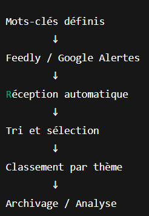

Veille Technologique – BTS SIO option SISR – Antoine Pageot
🎯 Sujet de veille : Zero Trust Security
Ma veille technologique porte sur le modèle Zero Trust Security,
une approche moderne de cybersécurité basée sur le principe :
« Ne jamais faire confiance, toujours vérifier ».
Ce modèle est formalisé dans la publication
NIST Special Publication 800-207,
publiée par le National Institute of Standards and Technology (NIST).
Authentification forte (MFA)
Principe du moindre privilège
Segmentation réseau
Vérification continue des identités et des équipements
Surveillance et journalisation permanente
💡 Pourquoi ce choix ?
J’ai choisi ce sujet car le modèle Zero Trust est aujourd’hui au cœur
des stratégies de cybersécurité des entreprises.
Développement massif du télétravail
Utilisation croissante des environnements cloud
Augmentation des attaques par ransomware
Disparition du périmètre réseau traditionnel
Les grands acteurs du numérique comme Microsoft, Google et Cisco
intègrent désormais ce modèle dans leurs architectures de sécurité.
Ce sujet est directement lié à l’option SISR, car il impacte :
L’administration Active Directory
La gestion des identités et des accès
La segmentation VLAN
La sécurisation des accès distants
La configuration des GPO
🚀 Apports professionnels
Compréhension des nouvelles architectures sécurisées
Anticipation des besoins futurs en entreprise
Lien direct avec mes missions E5 et E6
Approfondissement des notions d’identité et de contrôle d’accès
🛠️ Méthodologie de veille
1️⃣ Définition des axes de recherche
Zero Trust Security
Zero Trust Architecture
NIST 800-207
Micro-segmentation
MFA
Identity Security
SASE
2️⃣ Outils utilisés
📌 Feedly
Centralisation des flux RSS cybersécurité
Tri automatique des articles récents
Gain de temps dans la sélection des informations pertinentes
📌 Google Alertes
Alertes automatiques quotidiennes
Suivi des nouvelles publications
Identification des tendances émergentes
3️⃣ Organisation et automatisation
Classement des articles par thème (Cloud, Identité, Réseau)
Archivage des documents importants
Création d’une timeline d’évolution du modèle
Sélection de sources fiables et institutionnelles
4️⃣ Validation des sources
Publications officielles
Livres blancs techniques
Documentation éditeurs
Blogs spécialisés cybersécurité
Schéma simplifié du modèle Zero Trust Security : "Ne jamais faire confiance, toujours vérifier".

Processus méthodologique : définition des mots-clés, outils automatisés, tri et analyse.